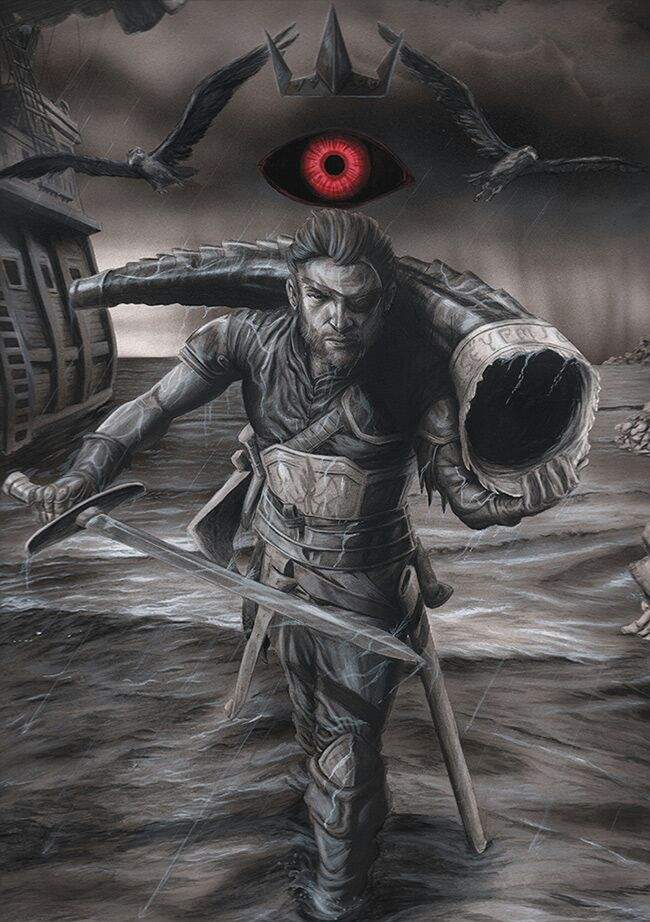

Euron Greyjoy
Capitán de El Silencio, Rey de las Islas del Hierro y del Norte, Lord Segador de Pyke

Segundo hijo de Lord Quellon Greyjoy con su segunda esposa Lady Sunderly y el más apuesto de todos sus hermanos. Su ojo derecho es de un color azul como el cielo del verano, mientras que cubre su ojo izquierdo con un parche, un ojo negro que brilla con malicia, según Theon.
Euron tiene una reputación terrible y es odiado por sus hermanos Aeron, al considerarlo un hombre sin fe, y por Victarion, ya que Euron dejó embarazada a su tercera esposa.
Su historia en los libros
Durante la Asamblea de Sucesión, tras la muerte de su hermano Balon, afirma haber navegado por las aguas malditas de lo que fue Valyria y encontrado un cuerno que puede controlar a los dragones de Daenerys. Esto ocasiona que salga elegido como Rey de las Islas del Hierro y del Norte y comienza su campaña para convertirse en Rey de los Siete Reinos.
Manda a su hermano Victarion llevar el cuerno a Meereen y hacerlo soplar para tomar el control de los dragones de Daenerys, así como traerla de vuelta a Poniente para casarse con ella. Mientras tanto, Euron azota las costas del Dominio.
En el capítulo publicado de Vientos de Invierno, aún sin publicar, El Abandonado, se da a entender que Euron cometió muchas barbaridades de niño, desde el fraticidio hasta agresiones sexuales a sus hermanos pequeño. En este mismo capítulo, su hermano Aeron tiene una serie de visiones proféticas, en las cuales ve a Euron sobre los cadáveres de todos los dioses del Mundo Conocido.
Citas relativas
¿Quién conoce más dioses que yo? […] conozco a todos los dioses. He visto a sus pueblos ponerles guirnaldas de flores, derramar en su sangre la sangre de cabras, […] de niños. He oído cómo les rezan […] en un centenar de idiomas, siempre rezan igual. Cúrame la herida de la pierna, […] concédeme un hijo varón fuerte, […] protégeme, protégeme de mis enemigos, […] protégeme de El Silencio. Crees que soy un hombre sin dios. Vamos Aeron, he servido a más dioses que nadie que haya izado una vela. Desde Ib hasta Asshai, cuando los hombres avistan mi barco, comienzan a rezar. - Euron Greyjoy a Aeron Greyjoy. Vientos de Invierno. Capítulo publicado. El Abandonado
Apuntes del fandom
Debido a la Maldición de Valyria y la historia de Aerea Targaryen, gran mayoría del fandom teoriza con que Euron no visitó realmente Valyria, sino que obtuvo el cuerno y la armadura de acero valyrio en otros lugares.
Puedes saber más aquí: Wiki of Ice And Fire: Euron Greyjoy